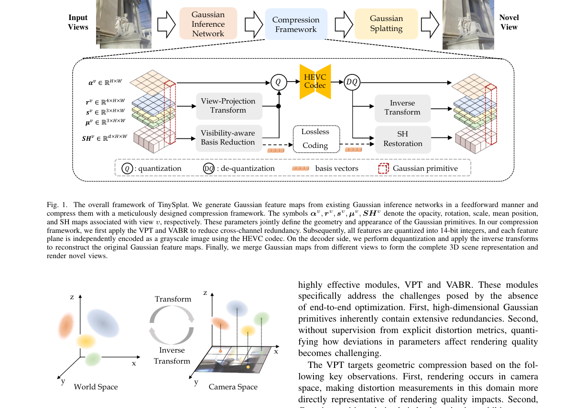
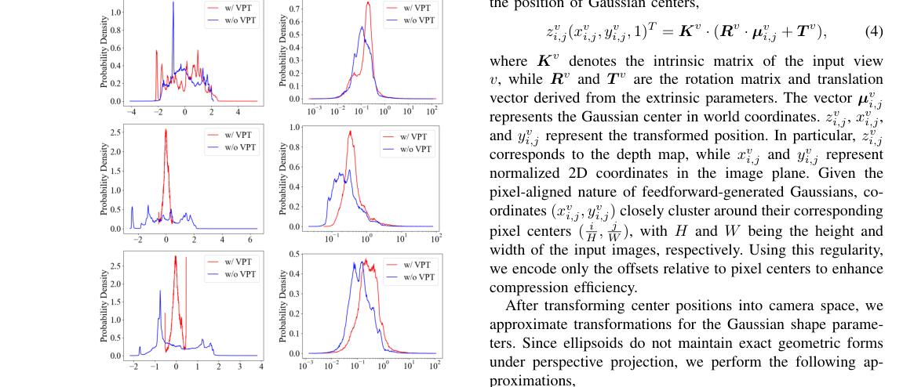
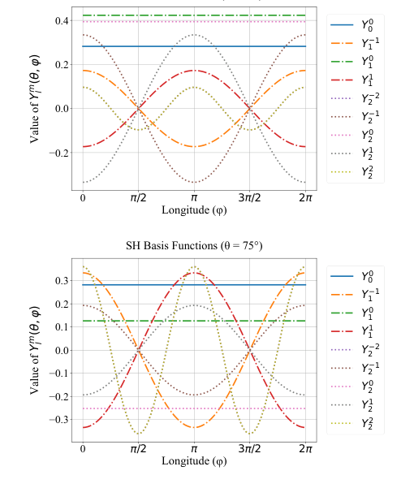
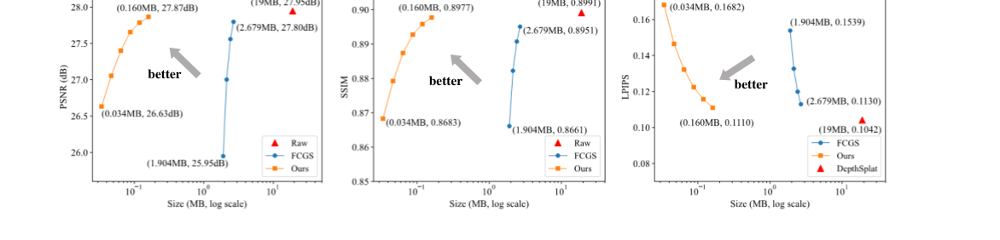
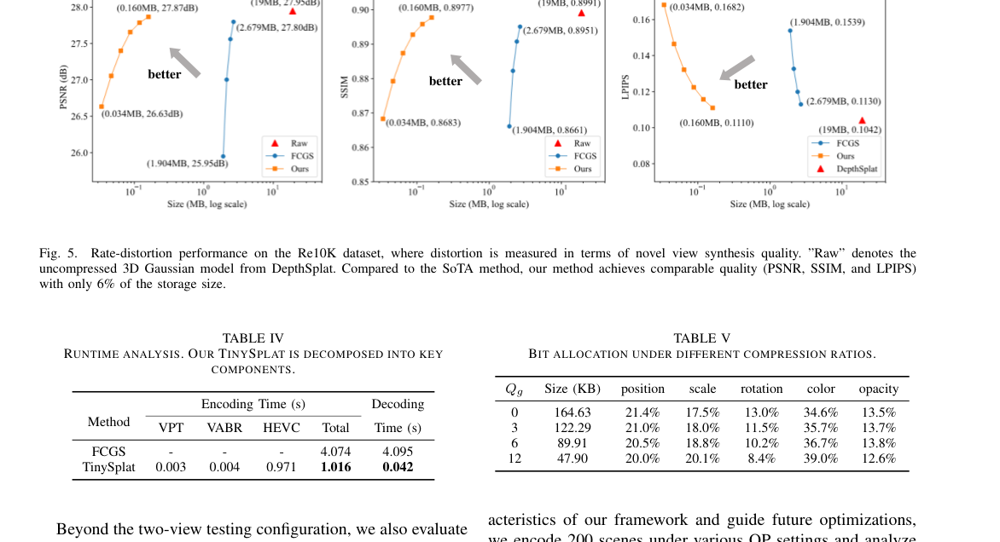

TinySplat
简单摘要
前馈 3D 高斯分布 (3DGS) 的最新发展提出了重建 3D 场景的新范例。使用在大规模多视图数据集上训练的神经网络，它可以直接从稀疏输入视图推断 3DGS 表示。尽管前馈方法实现了较高的重建速度，但它仍然受到 3D 高斯的大量存储成本的影响。由于架构不兼容，依赖于场景优化的现有 3DGS 压缩方法不适用。为了克服这一限制，我们提出了 TinySplat，一种用于生成紧凑 3D 场景表示的完整前馈方法。
TinySplat 基于标准前馈 3DGS 方法构建，集成了免训练压缩框架，可系统地消除关键的冗余源。具体来说，我们引入视图投影变换（VPT），通过将几何参数投影到更紧凑的空间来减少几何冗余。我们进一步提出了可见性感知基础减少（VABR），它通过基础变换沿着主导观看方向对齐特征能量，从而减轻感知冗余。最后，通过现成的视频编解码器解决空间冗余问题。在多个基准数据集上的综合实验结果表明，TinySplat 对前馈方法生成的 3D 高斯数据实现了超过 100 的压缩。
与最先进的压缩方法相比，我们仅用 6% 的存储大小即可实现相当的质量。同时，我们的压缩框架只需要 25% 的编码时间和 1% 的解码时间。


简而言之，这篇论文关注的核心是：前馈 3D 高斯分布 (3DGS) 的最新发展提出了重建 3D 场景的新范例。使用在大规模多视图数据集上训练的神经网络，它可以直接从稀疏输入视图推断 3DGS 表示。尽管前馈方法实现了较高的重建速度，但它仍然受到 3D 高斯的大量存储成本的影响。由于架构不兼容，依赖于场景优化的现有 3DGS 压缩…
3D 高斯溅射 (3DGS) 已成为从多视图图像重建 3D 场景的强大技术。通过将场景显式表示为各向异性高斯图元的集合，3DGS 可实现照片级真实感渲染并支持实时自由视点导航。普通 3DGS 公式依赖于随机梯度下降 (SGD) 和自适应密度控制来联合优化高斯图元的几何和外观属性。虽然这种方法实现了令人印象深刻的视觉保真度，但它对每个场景优化和密集输入视图的依赖极大地限制了其可扩展性和实用性。最近的前馈 3DGS 利用神经网络 (NN) 直接从输入图像推断 3D 高斯基元的参数，从而消除了迭代优化的需要。
它们显着提高了重建速度，并且能够处理稀疏视图输入，这使得它们对于 AR/VR 和移动 3D 捕捉等时间敏感型应用具有吸引力。然而，效率的提高是以数据量显着增加为代价的。 3DGS 需要大量高斯基元来对特定场景进行建模，从而产生大量内存和存储需求。这种扩展对数据传输和交互式渲染提出了重大挑战，凸显了对专门针对 3DGS 数据独特特征的有效压缩技术的需求。先前的研究已经探索了用于压缩 3DGS 模型的基于优化的策略，例如修剪、聚类、运动估计和概率建模。
值得注意的是，HAC 采用多分辨率哈希网格先验进行紧凑编码，而 ContextGS 通过分层上下文建模提高压缩效率。然而，由于它们依赖于迭代优化，这些方法继承了与普通 3DGS 相同的局限性，因此不适合前馈方法。为了克服这些限制，FCGS 引入了适用于任意 3D 高斯模型的免优化压缩框架。通过多路径熵模块集成基于哈希网格的超先验和上下文先验，FCGS 在不同数据集上实现了显着的压缩比。然而，它对于前馈生成的高斯模型的有效性仍然有限。
首先，FCGS 没有充分利用前馈几何生成所产生的固有空间冗余。此外，特征通道的统一处理阻碍了外观特征中存在的感知冗余的有效利用......
核心创新
综合引言与方法部分，这篇论文的核心创新可以概括为以下几方面：
1）问题定义与研究动机
3D 高斯溅射 (3DGS) 已成为从多视图图像重建 3D 场景的强大技术。通过将场景显式表示为各向异性高斯图元的集合，3DGS 可实现照片级真实感渲染并支持实时自由视点导航。普通 3DGS 公式依赖于随机梯度下降 (SGD) 和自适应密度控制来联合优化高斯图元的几何和外观属性。虽然这种方法实现了令人印象深刻的视觉保真度，但它对每个场景优化和密集输入视图的依赖极大地限制了其可扩展性和实用性。最近的前馈 3DGS 利用神经网络 (NN) 直接从输入图像推断 3D 高斯基元的参数，从而消除了迭代优化的需要。它们显着提高了重建速度，并且能够处理稀疏视图输入，这使得它们对于 AR/VR 和移动 3D 捕捉等时间敏感型应用具有吸引力。然而，效率的提高是以数据量显着增加为代价的。 3DGS 需要大量高斯基元来对特定场景进行建模，从而产生大量内存和存储需求。这种扩展对数据传输和交互式渲染提出了重大挑战，凸显了对专门针对 3DGS 数据独特特征的有效压缩技术的需求。先前的研究已经探索了用于压缩 3DGS 模型的基于优化的策略，例如修剪、聚类、运动估计和概率建模。值得注意的是，HAC 采用多分辨率哈希…
2）方法框架与核心模块
初步 广泛认可的 3D 高斯喷射采用高斯基元集合来对 3D 场景进行建模。每个基元都由定义其形状和辐射度的几何参数和 SH 参数组成。具体来说，高斯基元的几何性质用高斯概率密度函数来表征，其中 和 分别表示高斯中心和样本点的笛卡尔坐标。是 3D 协方差矩阵并表示其行列式。在普通 3DGS 中，协方差矩阵进一步分解为旋转矩阵 和 缩放矩阵 ，其中对角缩放矩阵存储为向量，并存储为表示旋转的四元数。在渲染过程中，每个高斯图元被投影到相机空间并集成以产生2D密度函数，该函数与不透明度参数相结合来计算像素级不透明度。同时，通过与视图方向查询SH函数来获取颜色值。为了重建特定场景，普通 3DGS 方法首先通过运动结构技术生成一组初始高斯基元。随后，该初始模型经过优化以匹配输入的地面实况图像，包括梯度引导的自适应致密化，以有效捕获精细的几何和纹理细节。尽管提供了高质量的重建，但这种基于优化的方法仍存在处理速度慢的问题。为了减轻这一限制，最近的研究建议通过引入通过交叉视图注意机制增强的深度神经网络来消除计算密集型的梯度下降步骤。这些在广泛的多视图数据集上训练的网络可以通过前馈推理直接生成准确的 3D…
3）实验设计与工程价值
数据集。我们对几个在该领域广泛使用的基准数据集进行了全面的实验。其中，RealEstate10K和ACID代表了相关研究中广泛采用的两个大规模多视图3D场景数据集。 RealEstate10K数据集主要包括从网上收集的室内场景多视图图像，包含7,289个测试场景。 ACID 数据集由空中无人机捕获的大量室外场景组成，有 1,972 个场景用于测试。此外，我们还在 DL3DV 数据集的子集上评估我们的方法，其中包含 140 个测试场景。我们的测试条件严格遵循以前研究中采用的常见配置。基线。在高斯生成阶段，我们采用代表性的前馈推理模型，包括 MVSplat 和 DepthSplat 来生成 3D 高斯特征图。为了证明所提出的管道的通用性和效率，我们将我们的方法与无优化压缩方法 FCGS 在压缩效率方面进行了比较。实施细节。在我们的实验中，VABR 的保留颜色特征维度固定为 6。对于 14 位…
技术细节
下面按照论文的方法章节结构展开，重点说明模型的关键模块、公式设计和训练策略。
初步 广泛认可的 3D 高斯喷射采用高斯基元集合来对 3D 场景进行建模。每个基元都由定义其形状和辐射度的几何参数和 SH 参数组成。具体来说，高斯基元的几何性质用高斯概率密度函数来表征，其中 和 分别表示高斯中心和样本点的笛卡尔坐标。是 3D 协方差矩阵并表示其行列式。在普通 3DGS 中，协方差矩阵进一步分解为旋转矩阵 和 缩放矩阵 ，其中对角缩放矩阵存储为向量，并存储为表示旋转的四元数。在渲染过程中，每个高斯图元被投影到相机空间并集成以产生2D密度函数，该函数与不透明度参数相结合来计算像素级不透明度。同时，通过与视图方向查询SH函数来获取颜色值。为了重建特定场景，普通 3DGS 方法首先通过运动结构技术生成一组初始高斯基元。随后，该初始模型经过优化以匹配输入的地面实况图像，包括梯度引导的自适应致密化，以有效捕获精细的几何和纹理细节。尽管提供了高质量的重建，但这种基于优化的方法仍存在处理速度慢的问题。为了减轻这一限制，最近的研究建议通过引入通过交叉视图注意机制增强的深度神经网络来消除计算密集型的梯度下降步骤。这些在广泛的多视图数据集上训练的网络可以通过前馈推理直接生成准确的 3D 场景表示。为了促进神经网络处理，这种方法通常会生成与输入图像分辨率相同的高斯特征图，其中每个位置存储单个高斯的所有几何和颜色属性。形式上，高斯推理过程可以表示为，其中 表示输入图像， 分别表示输入图像对应的内在参数和外在参数。表示视点的数量。提议的流程 所提议方法的总体流程如图 1 所示。最初，我们采用预先训练的前馈 3D 高斯推理网络来生成一组表示目标场景的 3D 高斯基元。
对于每个输入视图，网络生成直接对应于图像像素的高斯基元，每个基元由几何和颜色特征组成，如等式1中所述。 。这些特征共同形成每个视图的特征图。与原始图像相比，这种 3D 高斯表示的大小增加了两个数量级以上。然而，根据信息论原理，应用确定性变换并不会本质上放大源数据的信息内容。因此，生成的 3D 高斯模型包含大量冗余，而现有的依赖于优化的 3DGS 压缩方法与 feedf 不兼容……
$$ \mathcal{G}(\boldsymbol{x}) = \frac{1}{(2\pi)^\frac{3}{2}|\boldsymbol{\Sigma}|^{\frac{1}{2}}}exp(-\frac{1}{2}(\boldsymbol{x}-\boldsymbol{\mu})^T\boldsymbol{\Sigma}^{-1}(\boldsymbol{x}-\boldsymbol{\mu})), $$
p-transfigure 方法初步广泛认可的 3D 高斯分布采用高斯基元的集合来对 3D 场景进行建模。每个基元都由定义其形状和辐射度的几何参数和 SH 参数组成。具体来说，高斯基元的几何属性的特点是……
$$ \boldsymbol{\Sigma} = \boldsymbol{RSS}^T\boldsymbol{R}^T, $$
x-))，方程其中 和 分别表示高斯中心和样本点的笛卡尔坐标。是 3D 协方差矩阵并表示其行列式。在普通 3DGS 中，协方差矩阵进一步分解为旋转矩阵和缩放矩阵 ，其中对角缩放矩阵为 s…
$$ \label{feedforward gaussian manner} \begin{aligned} \mathcal{F}: \{( \boldsymbol{I}^v, \boldsymbol{K}^v,& \boldsymbol{E}^v)\}_{v=1}^V \Rightarrow \\ &\{\cup(\sigma_i^v, \boldsymbol{\mu}_i^v, \boldsymbol{q}_i^v, \boldsymbol{s}_i^v, \boldsymbol{SH}_i^v)\}_{i=1,...,H\times W}^{v=1,...,V}, \end{aligned} $$
。这些在广泛的多视图数据集上训练的网络可以通过前馈推理直接生成准确的 3D 场景表示。为了促进神经网络处理，这种方法通常会生成与输入图像分辨率相同的高斯特征图，其中每个位置存储所有几何和c…
$$ z_{i,j}^v(x_{i,j}^v,y_{i,j}^v,1)^T = \boldsymbol{K}^v\cdot(\boldsymbol{R}^v\cdot \boldsymbol{\mu}_{i,j}^v + \boldsymbol{T}^v), $$
g 模式。基于上述分析，我们建议将 VPT 应用于高斯基元的几何参数，以输入相机参数为条件。 VPT 的概念图如图 1 所示，其中我们将高斯几何参数变换到相应的相机空间。具体来说…
$$ \hat{\boldsymbol{q}}_{i,j}^{v}=Quat(\boldsymbol{R}^v)\cdot \boldsymbol{q}_{i,j}^v, $$
ng 分别是输入图像的高度和宽度。利用这种规律，我们仅对相对于像素中心的偏移进行编码，以提高压缩效率。将中心位置变换到相机空间后，我们近似高斯形状参数的变换。由于椭球体不主要...
$$ \hat{\boldsymbol{s}}_{i,j}^{v}=f\frac{\boldsymbol{s}_{i,j}^{v}}{z_{i,j}^{v}}, $$
o 像素中心以提高压缩效率。将中心位置变换到相机空间后，我们近似高斯形状参数的变换。由于椭球体在透视投影下不能保持精确的几何形状，因此我们执行以下近似，其中 和 表示...



把全文方法串起来看，这篇论文的逻辑基本都遵循同一条主线：先把输入组织成更容易处理的表示，再通过模型结构和损失函数把这个表示推向目标输出，最后用可视化与数值实验共同证明该设计有效。
实验结论
实验部分主要回答两个问题：第一，方法是否真的优于已有基线；第二，这种优势来自哪一个设计决策。
数据集。我们对几个在该领域广泛使用的基准数据集进行了全面的实验。其中，RealEstate10K和ACID代表了相关研究中广泛采用的两个大规模多视图3D场景数据集。 RealEstate10K数据集主要包括从网上收集的室内场景多视图图像，包含7,289个测试场景。 ACID 数据集由空中无人机捕获的大量室外场景组成，有 1,972 个场景用于测试。此外，我们还在 DL3DV 数据集的子集上评估我们的方法，其中包含 140 个测试场景。我们的测试条件严格遵循以前研究中采用的常见配置。基线。在高斯生成阶段，我们采用代表性的前馈推理模型，包括 MVSplat 和 DepthSplat 来生成 3D 高斯特征图。为了证明所提出的管道的通用性和效率，我们将我们的方法与无优化压缩方法 FCGS 在压缩效率方面进行了比较。实施细节。在我们的实验中，VABR 的保留颜色特征维度固定为 6。对于 14 位量化，每个通道的量化步长配置为 ，其中表示当前通道的标准差，是根据经验选择的缩放因子，如表 所示。我们最初为每个通道设置为 256，并有选择地为一些错误敏感通道增加它以提高重建质量。由于不同颜色基础分量之间的分布不同，我们对所有颜色通道采用共享的量化步骤以确保一致的量化。这里， 代表最主要成分的标准差。量化后，应用偏移以使最小量化值变为 。每个通道中的极端异常值都会被截断，以确保最大量化值不会超过有效的 14 位范围。在视频编码模块中，每个通道被视为独立的灰度图像，并使用HEVC参考软件HTM15.0-RExt8.1进行编码，所有通道通过单独的进程并行编码。为了实现不同的压缩率，我们调整全局量化参数（QP），表示为 。然后，通过实验配置一组每通道 QP 偏移，如表 所示。随后，HEVC 编解码器的 QP 值被配置为 。
所有实验均在配备 Intel Core i7-13700K CPU 和单个 NVIDIA RTX 4090 显卡的工作站上进行，运行在 Ubuntu 20.04 的 WSL2.0 环境中。整体语法元素包括高斯几何参数（位置、尺度和旋转）、颜色特征系数和不透明度。此外，少量元数据是明确的……



- 方法在核心指标上的优势与结构设计和训练目标直接相关；
- 消融实验表明，拿掉关键模块后性能与结果质量都有明显回落；
- 论文不仅比较数值，也关注可视化质量、稳定性和泛化能力等更贴近真实使用的信号。
理解评价
在这项工作中，我们没有修改现有的 3D 高斯推理网络；相反，我们专注于开发适用于他们生成的高斯数据的通用压缩框架。虽然我们的方法有效地产生紧凑的 3D 高斯表示，但我们实现的压缩比和理论限制之间仍然存在显着的差距。由于 3D 高斯完全源自一些输入图像，因此信息论表明它们的熵不应超过输入的熵。然而，即使在压缩之后，3D 高斯模型的大小仍然超过使用传统编解码器压缩的原始图像的大小。我们将这种差异主要归因于推理过程本身，其中复杂的神经网络模型将重要的先验知识引入到生成的 3D 高斯表示中。
开发轻量级方法来明确提取和利用这些先验知识为未来的研究提供了一个有希望的方向。此外，重新设计或微调推理网络以生成本质上更可压缩的表示是另一个重要的探索途径。在本文中，我们提出了 TinySplat，这是一种完全前馈方法，用于直接从多视图图像生成紧凑的 3D 高斯场景表示，而无需针对每个场景进行优化。 TinySplat 弥合了快速 3D 高斯生成和实际部署之间的差距，将前馈推理阶段与新颖的渲染感知压缩阶段集成在一起。
对于压缩阶段，我们提出了一个带有 VPT 和 VABR 模块的专用框架，以分别减少结构和感知冗余。此外，我们采用标准视频编解码器来消除空间冗余。大量实验表明，TinySplat 显着减少了……
如果把它当成研究参考，建议重点关注三件事：第一，这套方法真正依赖的归纳偏置是什么；第二，实验中真正拉开差距的模块是哪一个；第三，它的局限究竟来自数据、算力还是监督信号本身。
以下相关论文可以作为进一步追踪的入口：